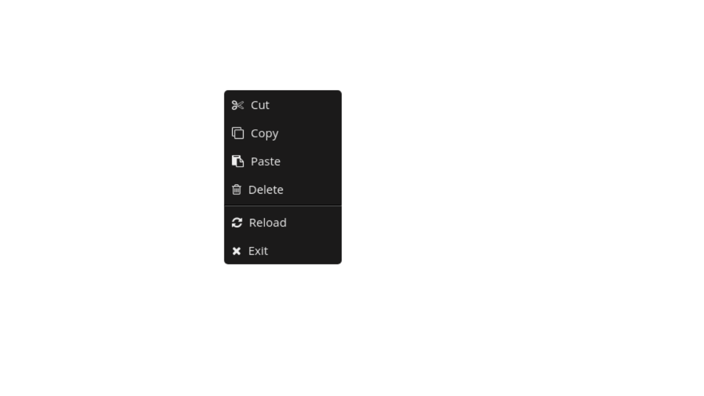

Custom Right Click / Context Menu
Web apps are using their own customized context menu to present users with relevant actions. In a web browser, when a right-click action is performed, contextmenu event gets fired. In order to deploy a customized context menu, we’ll need to prevent default behaviour, and then set up, trigger, and position our own menu.